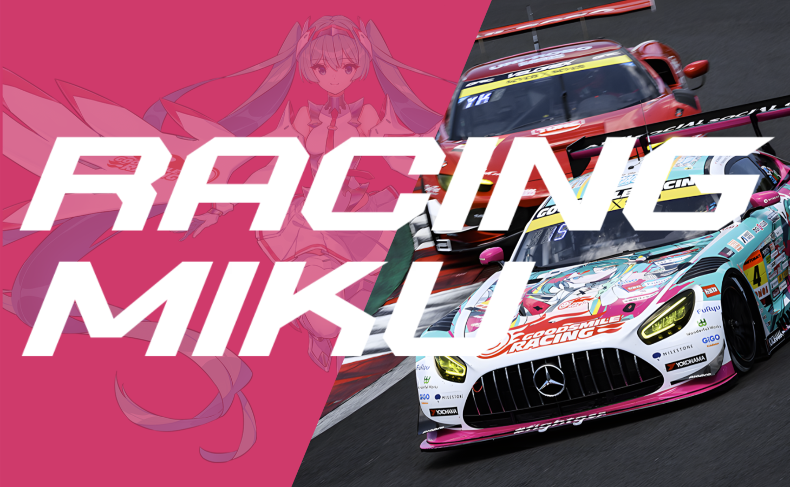
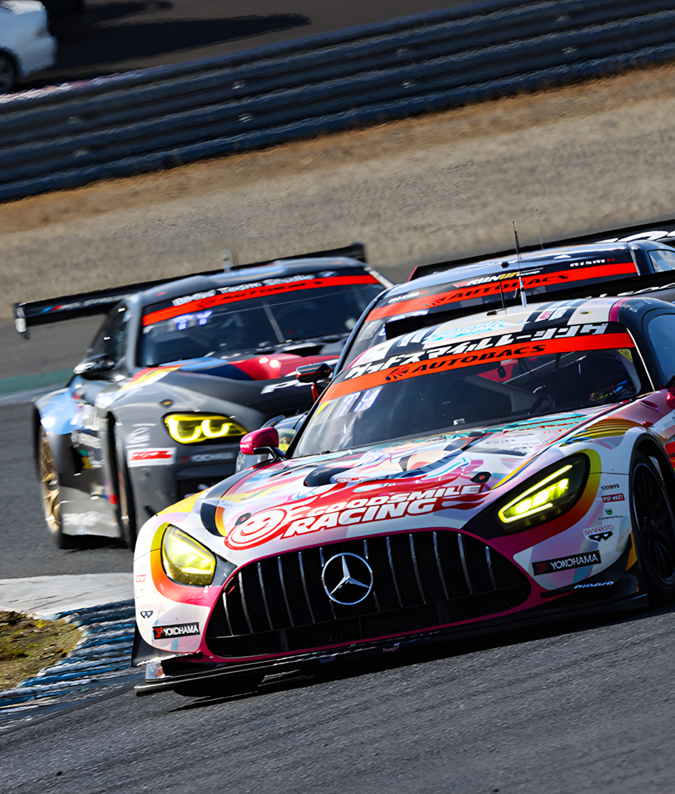
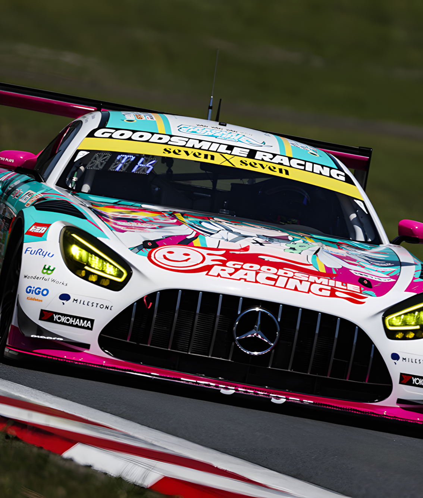
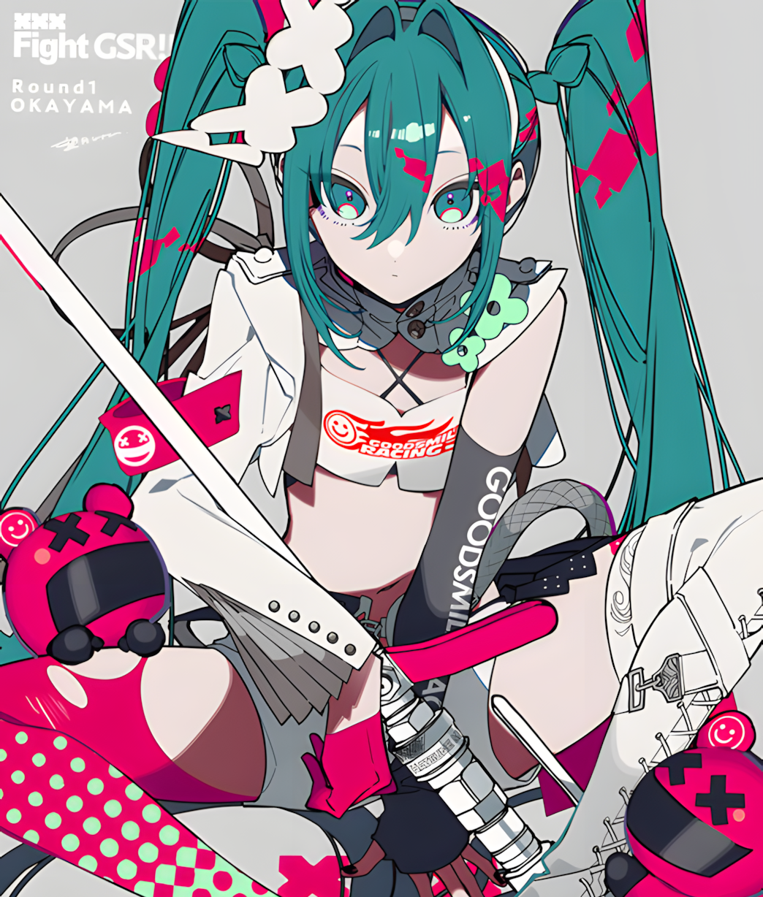

Good Smile Racing (GSR) continues its Hatsune Miku GT Project in 2025 with a new Racing Miku design by illustrator Kei Mochizuki. This iteration will feature on their Mercedes-AMG GT3 Evo, competing in the SUPER GT GT300 class. The current races held so far Round 1 Okayama: They qualified 1st and finished 4th in the finals. Round 2 Fuji: They qualified 12th and finished 9th in the finals. Round 3 Sepang: They qualified 8th and achieved coming in 3rd. This season is still ongoing...





